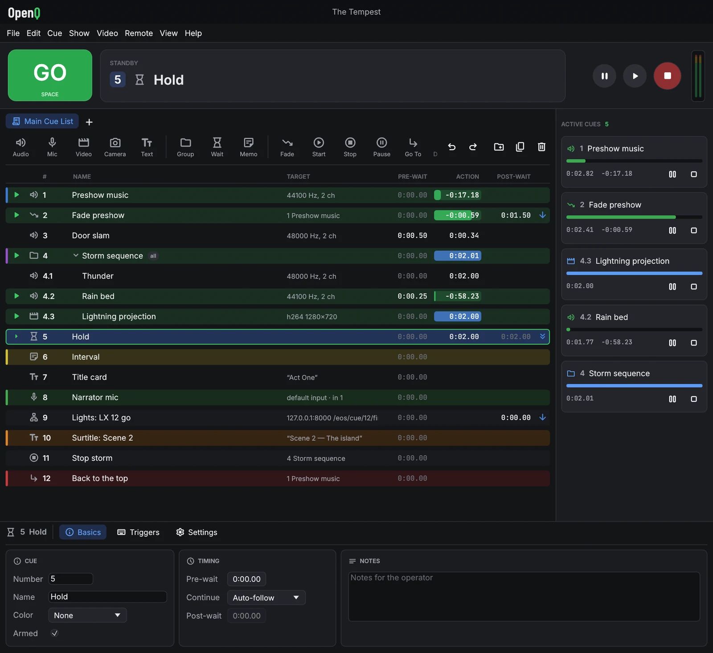

Control de espectáculos en directo para son, vídeo e escena
Monta unha lista de cues — música, efectos, películas, rótulos, fundidos, mensaxes á mesa de luces — e leva todo o espectáculo cun só botón GO. De balde para calquera produción, tamén comercial.
Instala OpenQ
Nun terminal:
curl --proto '=https' --tlsv1.2 -fsSL https://github.com/iagonunez/oqman/releases/latest/download/install.sh | shInstala as ferramentas de compilación cos paquetes da túa distribución (pregunta antes), compila OpenQ e engádeo ao menú de aplicacións.
Nun terminal:
curl --proto '=https' --tlsv1.2 -fsSL https://github.com/iagonunez/oqman/releases/latest/download/install.sh | shmacOS 11 ou posterior. Nun Mac sen as Command Line Tools de Apple, macOS pide instalalas primeiro; despois volve executar a orde. OpenQ queda en Aplicacións dentro do teu cartafol persoal.
En PowerShell:
powershell -ExecutionPolicy Bypass -c "irm https://github.com/iagonunez/oqman/releases/latest/download/install.ps1 | iex"Windows 10/11 de 64 bits. Sen as C++ Build Tools de Microsoft, primeiro ábrese o seu instalador: acéptao e deixa que remate. Despois OpenQ está no menú Inicio.
O instalador, oqman, compila OpenQ no teu ordenador. Máis adiante: oqman update · oqman uninstall.

Que fai
Todo se explica paso a paso no manual de usuario, que tamén vén coa aplicación (Axuda → Manual de usuario, ou F1).